2026.10.03 — 10.09 ｜ 高加索之魂 · 一册在手，边走边看
放下行李，用一场老城黄昏与硫磺浴，开启格鲁吉亚之夜。节奏松弛
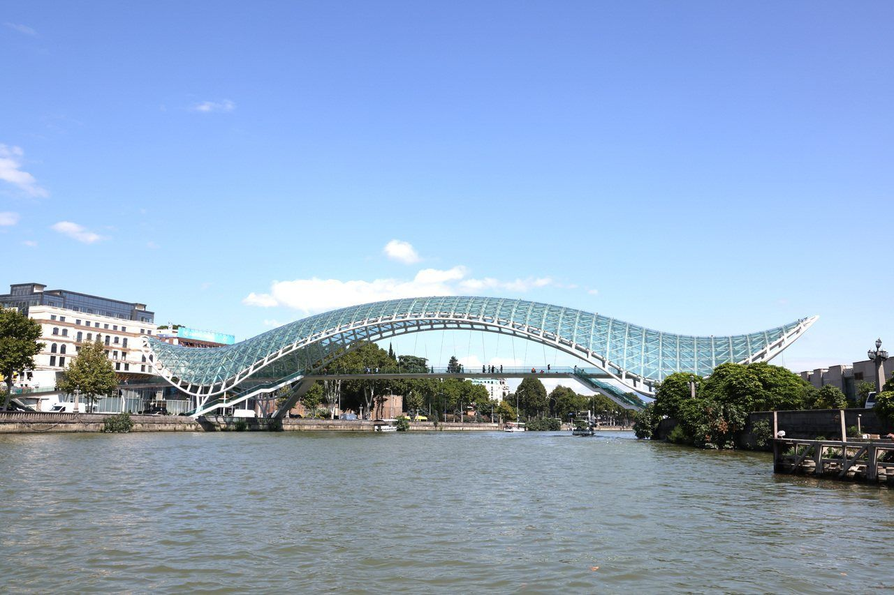
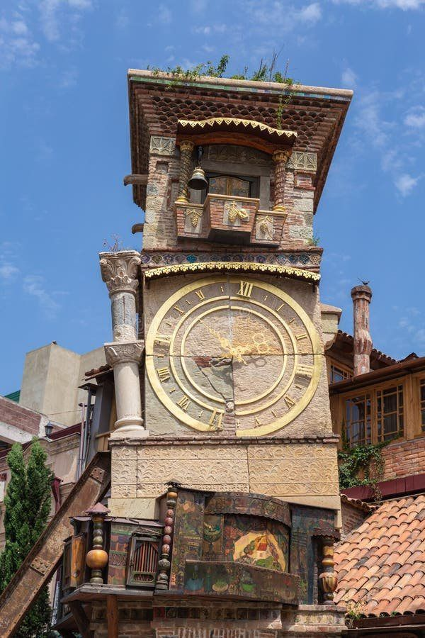
往东跨过山脊，去卡赫季红葡萄酒产区最浪漫的山城。🚗 包车一日（单程约 2h / 110km），昼出夜归住第比利斯。
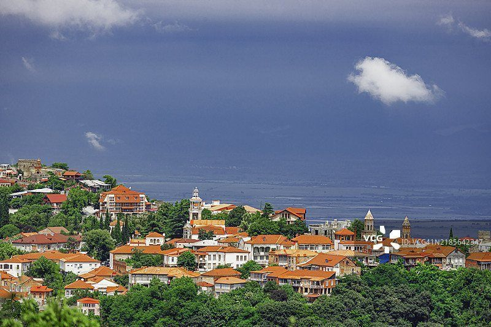
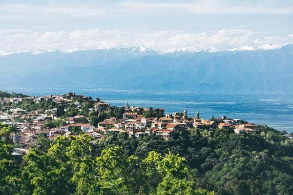
沿「红色自驾路线」完整走通——湖泊、古堡、山口与雪山。🚗 包车边逛边玩约 6h，夜宿卡兹别克。
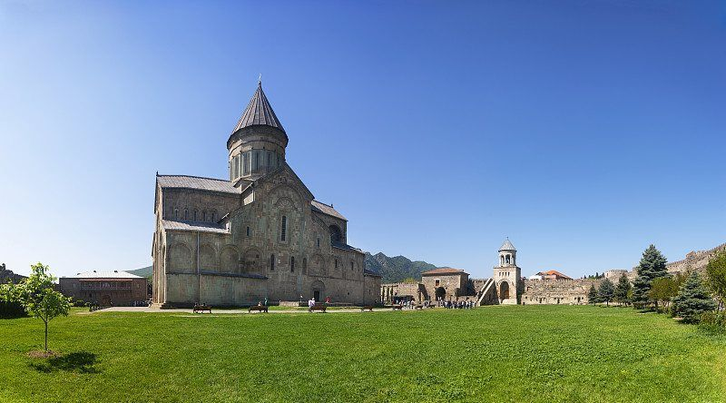
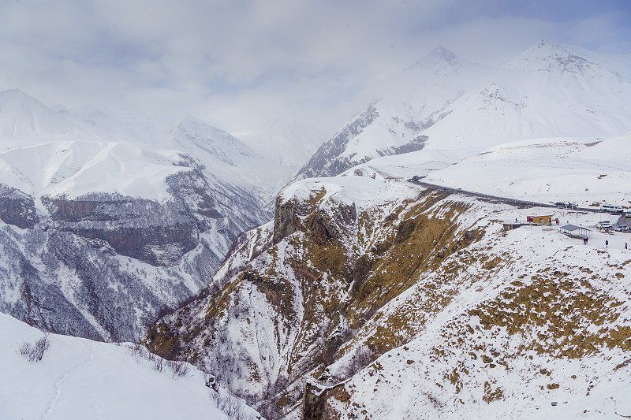
清晨的日照金山是此行最值得守候的一刻——教堂与雪山同框。
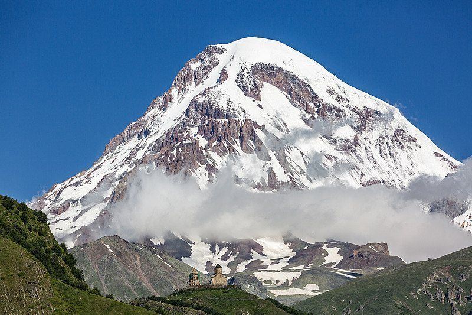
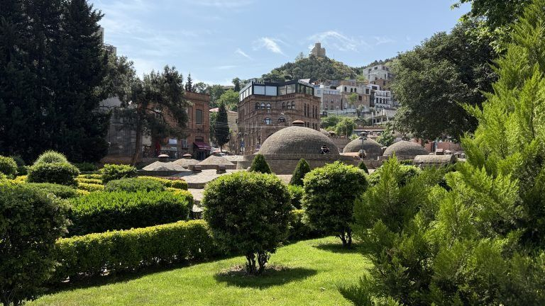
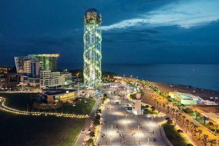
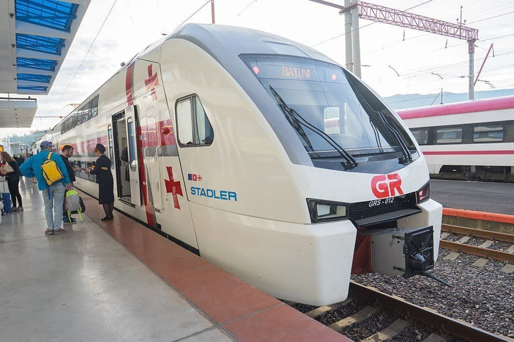
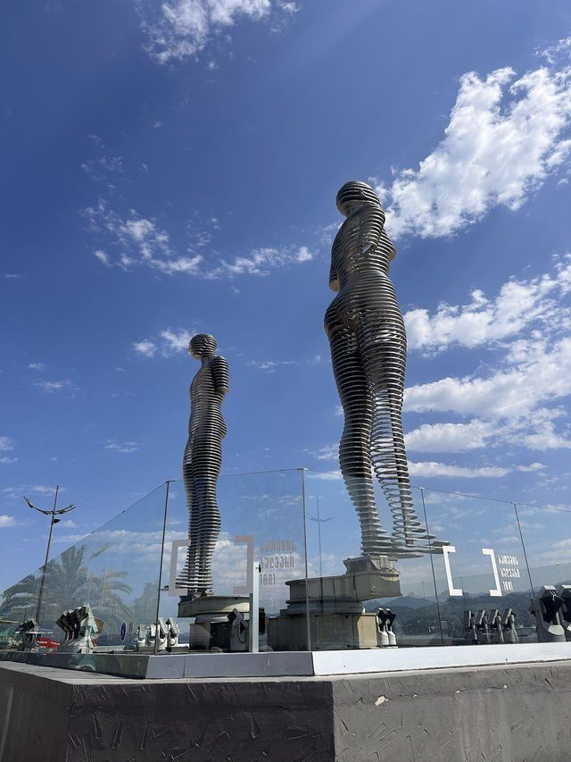
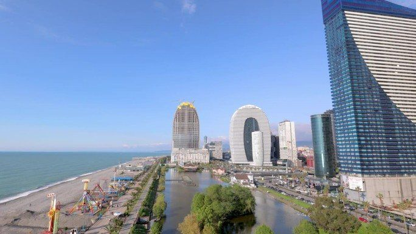
中格互免签证（2024.5.28 生效），10 月赴格免签；护照有效期需 ≥6 个月，打印往返机票+酒店订单备用。
建议出行前购买涵盖医疗、意外与航班延误的境外旅行保险，登山/自驾项目尽量选可附加条款，保障更安心。
使用格鲁吉亚拉里 GEL，机场可换汇；打车建议备现金零钱 + 银行卡。
军事公路弯多海拔高，控速、勿走小路；出发加满油，沿线加油站有限（SOCAR）。
平均 10–20°C、山区更低，卡兹别克近 0°C，务必带羽绒/厚外套，昼夜温差大。
教堂内着装得体、保持安静；敬酒时举杯说「Gaumarjos」更拉好感。
欧标双圆孔（C/F 型），带转换插头；机场/市区可购 eSIM 或当地电话卡。
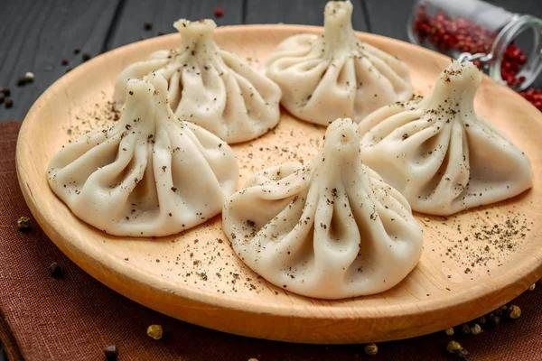
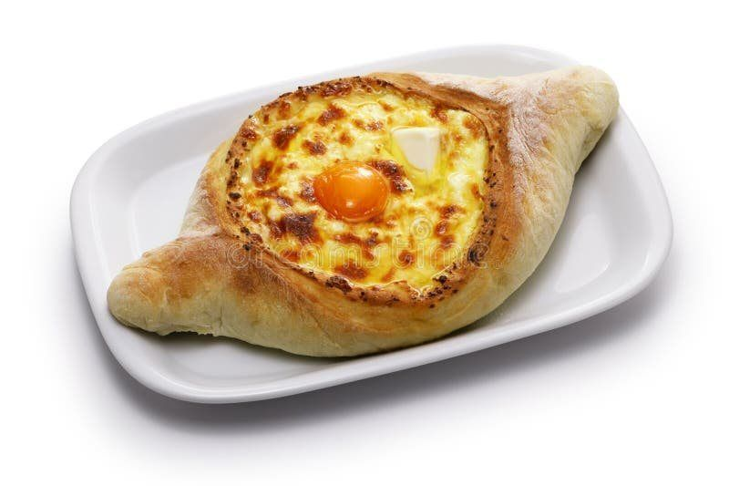
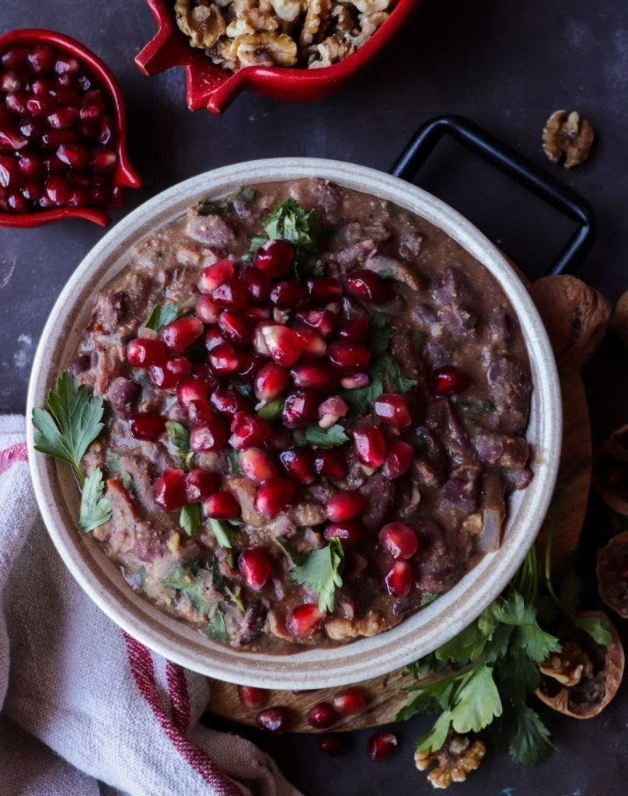
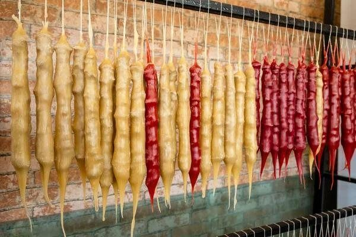
TKT.ge / railway.ge 网上购票，护照号购票，凭电子票上车；想看黑海选右侧、上层座位。
第比利斯地铁+打车（Bolt/Yandex），市区紧凑；老城酒店到各景点多在步行 20 分钟内。
去程 Train 804 17:10-21:11；返程 803 08:00/806 06:30 早发，回程提前 24h 订票免无座。
返程建议 14:00 前到第比利斯机场（距中央车站不近），为打车留足余量。
葡萄酒、恰恰烈酒、香料与陶器是必买；硫磺浴区逛逛老城小店。
清晨看阿里尼诺&海滨大道（人少光好），傍晚看雕像灯光秀与卡兹别克日照金山。
位于市中心自由广场（Liberty Square）旁·亚历山大·普希金公园内。
☎️ +995 32 2 15 86 97 · ✉️ tictbilisi@gmail.com
🕐 每天开放：10月–3月 10:00–21:00 ／ 4月–9月 09:00–21:00
免费地图、信息册、卫生间与出行咨询，可索取多语资料，出发求助第一站。
位于机场大楼到达大厅（距市中心约 17 公里）。
☎️ +995 32 2 31 00 07 · ✉️ ticairport@gmail.com
🕐 全年 24 小时无休，抵达即取资料。
📍 第比利斯市 Barnov Str. 52（距老城约 10 分钟车程）
📱 扫码关注
格鲁吉亚国家旅游局官方微信🎒 愿这 7 天，装下山与海
旅途愉快 · 一路平安 ✨
格鲁吉亚 7 日旅程卡片手册 · 由「WorldStip」定制。
出行前请以 格鲁吉亚国家旅游局官网 及当地实时信息核对为准。